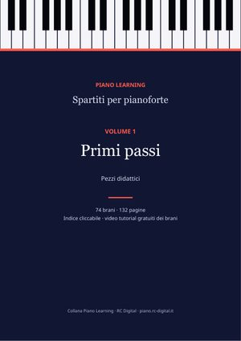
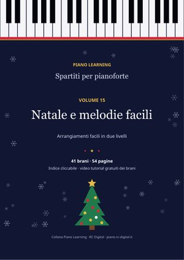
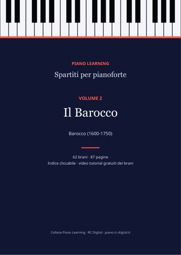
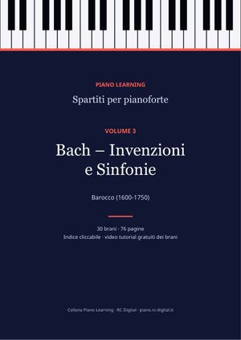
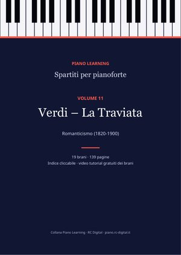
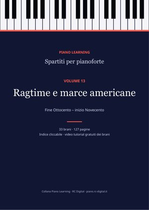
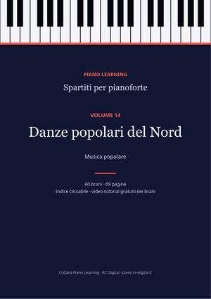
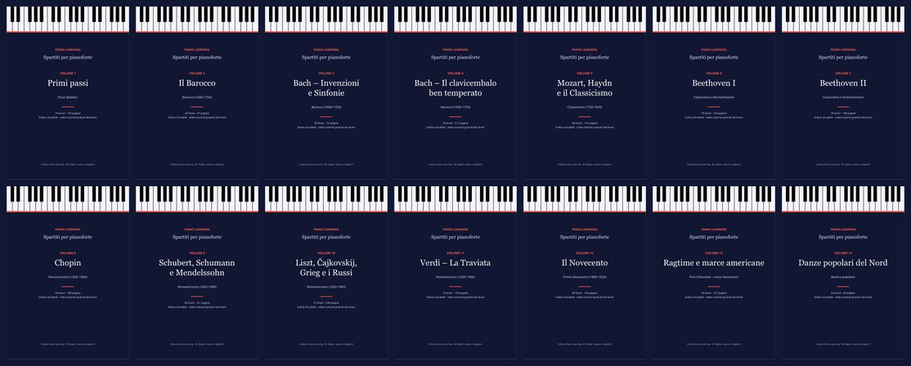

Pezzi didattici
Volume 1Primi passi
Studi e pezzi facili: Burgmüller, Czerny, Hanon, Schumann (Album per la gioventù), Kuhlau.
74 brani · 132 pagine
3,99 €Acquista
Piano Learning · PDF
14 volumi ordinati per autore e periodo, con indice cliccabile, biografie dei compositori e il link al video tutorial di ogni brano che ce l'ha. Ogni acquisto contiene il PDF in 10 lingue.
55,86 €19,99 €−64%

41 brani · 54 pagine
41 brani in arrangiamenti facili a due livelli: 16 canti di Natale e 25 melodie famose.
Tocchi il titolo nell'indice e sei già alla pagina giusta. Ci sono anche i segnalibri.
Poche righe per sapere chi ha scritto la musica che stai suonando.
Dallo spartito al video con le note che scendono, per ogni brano che ce l'ha.
Con un solo acquisto scarichi l'edizione nella lingua che preferisci.
La prima pagina di quattro brani della collana. Tocca una pagina per aprire il brano.

Studi e pezzi facili: Burgmüller, Czerny, Hanon, Schumann (Album per la gioventù), Kuhlau.
74 brani · 132 pagine

Bach (minuetti, polacche, piccoli preludi, corali), Händel, Scarlatti, Rameau, Pachelbel.
62 brani · 87 pagine

Le 15 Invenzioni a due voci e le 15 Sinfonie a tre voci, complete.
30 brani · 76 pagine
Preludi e fughe del Clavicembalo ben temperato, Suite inglesi e francesi, Suite BWV 1006a, L'arte della fuga.
59 brani · 211 pagine
Marcia alla turca, Sonata facile, Fantasia in re minore e i classici del Settecento.
40 brani · 116 pagine
Per Elisa, la sonata «Al chiaro di luna», la Patetica, variazioni e sonate.
18 brani · 125 pagine
L'Appassionata e le grandi sonate.
18 brani · 148 pagine

I 24 Preludi, Notturni, Valzer, Studi e Ballate.
46 brani · 186 pagine

Gli 8 Improvvisi di Schubert, Scene infantili, Romanze senza parole, Brahms.
28 brani · 151 pagine

Consolazioni, Le stagioni, Peer Gynt, Quadri di un'esposizione e altri romantici.
37 brani · 230 pagine

L'opera completa ridotta per pianoforte solo, numero per numero.
19 brani · 139 pagine
Debussy, Satie, Rachmaninov, Skrjabin, Bartók.
40 brani · 136 pagine

Scott Joplin, John Philip Sousa e altri.
33 brani · 127 pagine

Danze tradizionali svedesi e finlandesi.
60 brani · 69 pagine

Cinque volumi singoli costano 19,95 €. La collana completa, con tutti e 14, costa 19,99 €.
55,86 €19,99 €−64%
Tutti i 14 volumi: 564 brani, 1.933 pagine di musica.
In PDF. Li apri su computer, tablet e telefono e li puoi stampare. Ogni volume è un unico file con indice cliccabile e segnalibri.
Ogni acquisto comprende l'edizione in 10 lingue: italiano, inglese, tedesco, spagnolo, francese, portoghese, russo, cinese, giapponese e coreano. Scarichi quella che preferisci.
Subito dopo il pagamento si apre la pagina di download e ti arriva un'email con il link. Ogni volume singolo è un PDF; la collana completa è un file ZIP per lingua con i 14 PDF (circa 50 MB).
Sì. Sono edizioni libere (pubblico dominio o Creative Commons) e nelle pagine del sito trovi il link gratuito, brano per brano. Con la collana li hai tutti ordinati per autore e periodo, con indice, biografie, link ai tutorial e i crediti completi di ogni edizione.
No. Il Volume 15 «Natale e melodie facili» si acquista a parte a 3,99 €. La collana completa comprende i volumi da 1 a 14.
Risparmi il 64% rispetto ai 14 volumi singoli (55,86 €).
55,86 €19,99 €−64%
Pagamento sicuro con Payhip e download immediato per email. Gli spartiti sono edizioni libere (pubblico dominio o Creative Commons): li trovi anche gratis, brano per brano, nelle pagine del sito; qui li hai tutti ordinati in un solo file, con i crediti completi di ogni edizione.